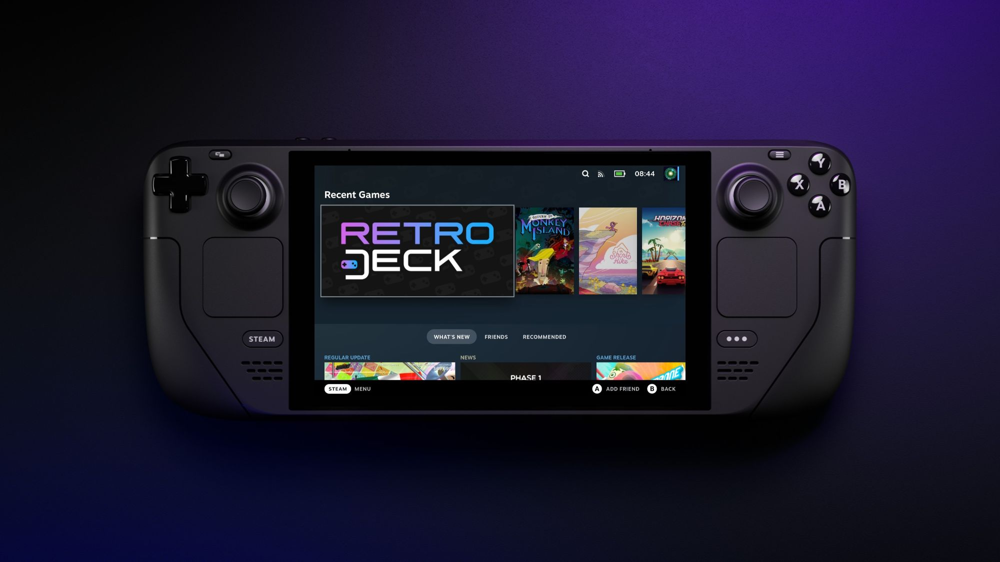
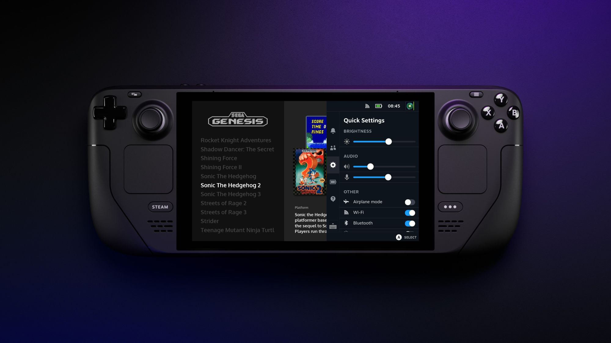
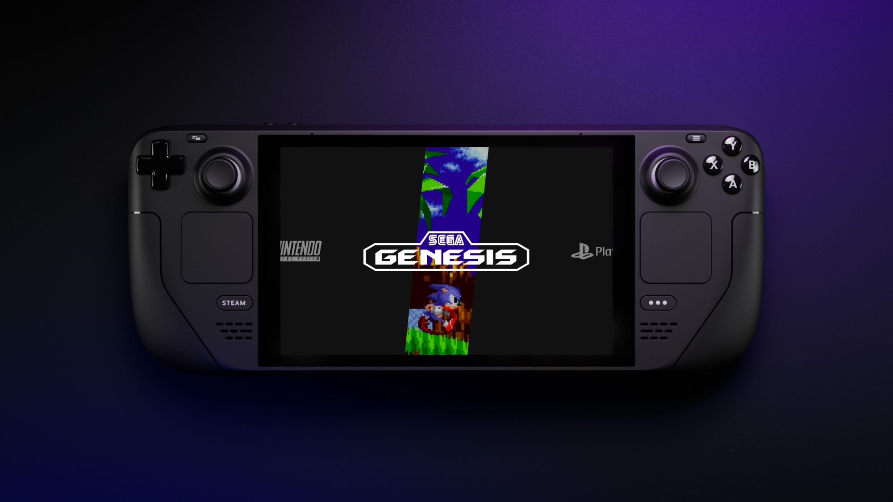
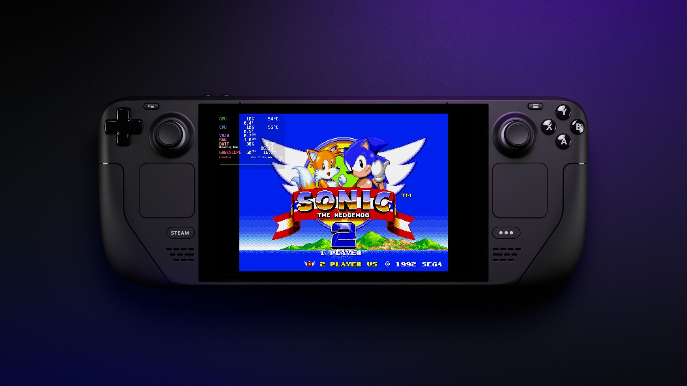
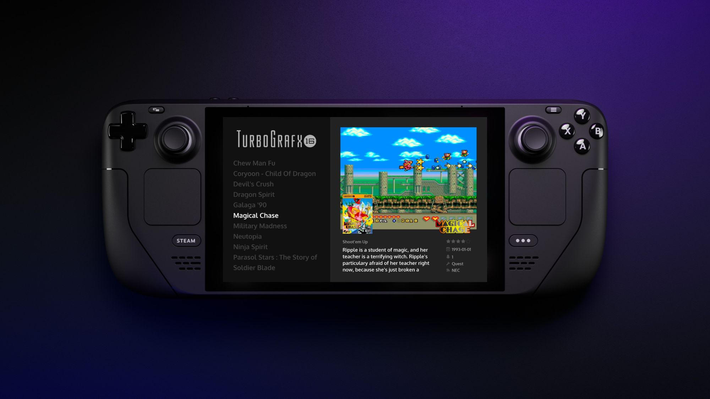

screenshots






RetroDECK is a polished and beginner-friendly environment for playing your retro games on Steam Deck and Linux Desktop, available with just one click from the Discover app or wherever you get your flatpaks.
Together with Emulationstation-DE and RetroDECK's own framework we bring you the best retro system out there!
No configuration is needed to start. You provide the games and we provide the play!
Quit your game and pick it up exactly where you left off.
Go back in time and retry without having to restart your game or skip over that long conversation.
A super powerful multi-tool interface that allows you to have quick access to the advanced functions and tweak them to your desire.
Everything is contained within one application and not over your entire filesystem. Only one place to look and one place to backup!
Features a in-depth global hotkey system with radial menus in addition to button combos via Steam Input.
Can' t surpass THAT point? Don't want to farm? Enable cheats and play smoothly.
From the ES-DE frontend you can pull information to your library to create a beautiful user experience from various sources, that fits your style.
Get rewarded while you play! RetroDECK tracks your progress and awards you when you go the extra mile.
The RetroDECK Team always have several things in the works, what follows is just a tiny selection. To stay up to date on latest RetroDECK news check the the Wiki and join the Discord.
Tools to make it easier to play with your friends online.
RetroDECK will backup your progression and sync it across multiple devices.
Use local RetroDECK users or bind Steam Deck users to your own saves and emulator configurations.
The new controller friendly configurator with even more advanced tools.
Tools for adding all your favorite games as seperate entries in Steam with the click of a button.
RetroDECK will support even more Emulators / Game Engines / Tools and Systems.
Help us keep the game preservation ecosystem alive and healthy.